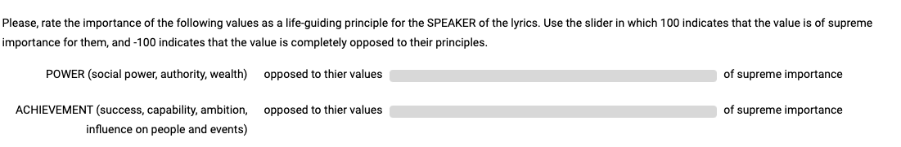
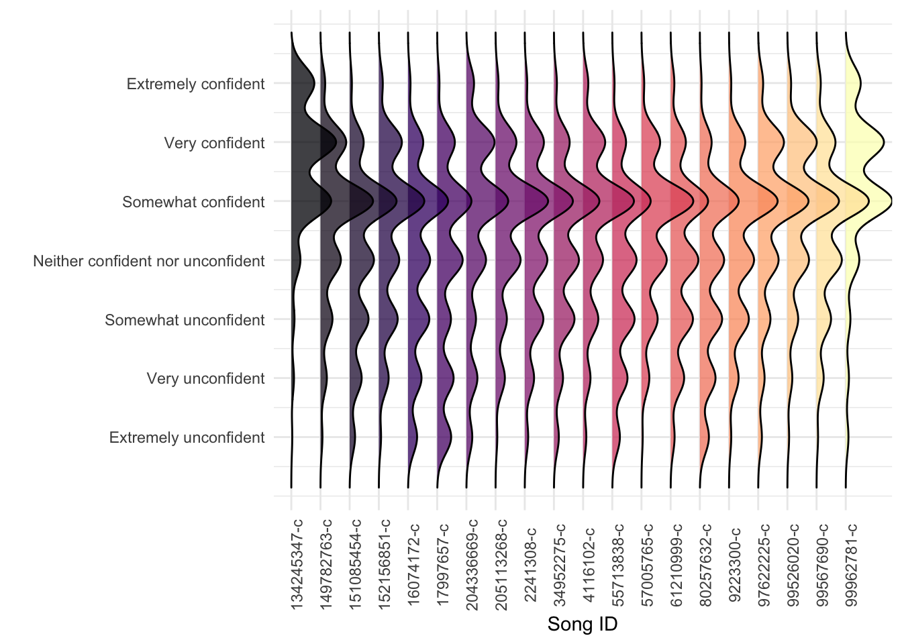
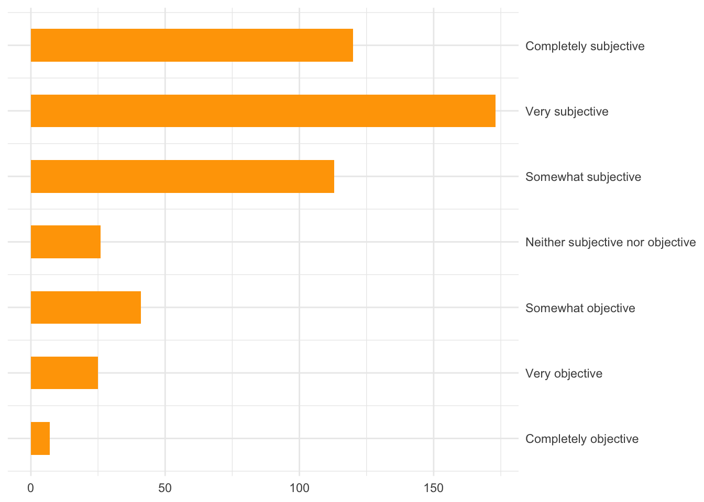
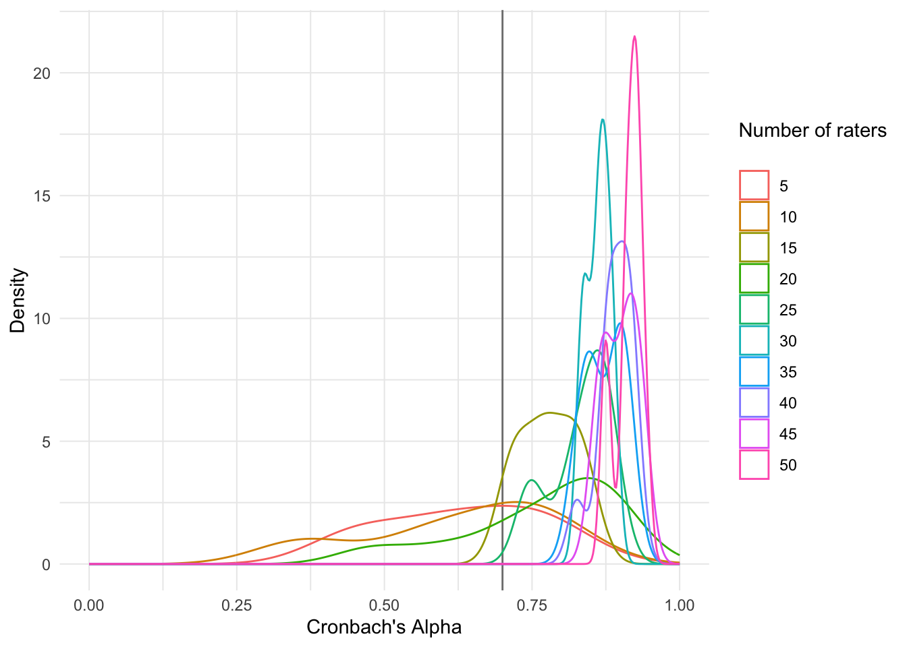

Values from Lyrics: Pre-Registration
Study Information
Contributors: Andrew M. Demetriou, Jaehun Kim, Sandy Manolios, Cynthia C.S. Liem
See Section 1.7 for details of individual contributions according to the Contributor Roles Taxonomy.
Overview
We aim to extend work that used natural language processing (NLP) to estimate psychological values (e.g. (Schwartz et al. 2001)) in social-media text (Ponizovskiy et al. 2020). Specifically we will explore the potential to estimate the perceived psychological values in song lyrics.
Our study primarily consists of comparisons between what people indicate, and what NLP systems estimate, are the psychological values expressed in song lyrics. We will gather responses from people using an online survey. We will also use NLP systems to estimate the scores and compare them to those from people.
As in Ponizovskiy et al. (2020) we estimate convergent validity of the grouped NLP systems and our queztionnaire by estimating correlations with related constructs measured using Linguistic Inquiry Word Count (LIWC; Boyd et al. (2022)). We will also compare the performance of word counting methods used in Ponizovskiy et al. (2020) with semantic distance methods similar to those used in e.g. Beaty and Johnson (2021).
People who are exceptionally familiar or who have a strong preference for song lyrics may give different ratings than others. To examine this in the future, we also begin development of a psychometric questionnaire aimed at measuring lyric preference intensity and expertise.
Lastly, we aim to make artifacts of this project reproducible. Thus, reusable instances of the NLP systems will be available on Replicate, codebases and notebooks documenting our work will be available on Github, as well as Open Science Framework which will also include de-identified responses from participants. These repositories will also contain the files we used to make our formR.org survey, a test version of which can be found here.
Hypotheses
As this is an initial study, our hypotheses are not severe:
Primary Hypothesis: Grouped NLP systems show a statistically significant correlation with grouped a) participant ratings across all 10 personal values, and b) with related LIWC constructs - in the same or greater magnitude as shown in Ponizovskiy et al. (2020).
Primary Null Hypothesis: Grouped NLP systems show no evidence of a correlation with participant ratings across all 10 personal values, or LIWC constructs.
Secondary Hypothesis: Magnitude of these correlations will be lower with word-counting methods than with semantic distance methods.
Secondary Null Hypothesis: Magnitude of these correlations show no difference.
Study Type
Observational study - Data is collected from study participants that are not randomly assigned to a treatment.
Blinding
No blinding is involved in this study
Design Plan
Participant Recruitment Platform
We will recruit a U.S. representative sample of participants from Prolific.co.
Survey Platform
Our primary measure is the perceived presence of personal values in song lyrics. Song lyrics may be written from the perspective of the author, but also from the perspective of someone or something else - sometimes referred to as the ‘speaker’. As we are measuring the presence of values as suggested in the lyrics themselves, we explicitly ask participants to respond with the perspective of the speaker in mind, and not the author.
The survey will be implemented on an instance of formR.org hosted on the servers of Delft University of Technology to ensure GDPR compliance. A test version of the survey can be found here. The .csv survey files used as input to formR were constructed in R1. The main component of the survey involves showing participants the lyrics to a number of songs, one at a time. For each song they are asked to respond to set of questions designed to assess the presence of values in the lyrics.
The majority of items require a Likert-type response. In order to gather a more continuous measure, we used a slider with no starting point: the rating button option in formR shows a horizontal gray bar with two labeled poles (e.g. agree - disagree). For each value there is a brief description, followed by the slider labelled (“opposed to their values” - “of supreme importance”).

Participants are instructed to indicate on the bar the degree to which they e.g. agree or disagree, as they might with a slider. However, the gray bar has no visible slider, thus no starting value. Although it shows no divisions it contains 20 subdivisions. To ensure that participants understand the use of this method, we include a ‘training and explanation’ page at the beginning of our survey.
Randomization
Participants are randomly assigned 18 lyric stimuli to rate. We experienced issues with the formR platform when the number of lyric stimuli in the survey was greater than 60. Thus, our stimulus set will be separated into otherwise identical survey files on the formR server, with no more than 60 lyrics in each survey file. Participants will be randomly assigned to one of the surveys, which will in turn randomly select a subset of stimuli to be rated.
Survey Measures
Personal Values
Prior research (e.g. Schwartz et al. (2001)) has shown evidence for the presence of personal values as guiding principles in the lives of people. Participants will indicate the degree to which they think 10 values are present for each set of lyrics that they are shown. We chose to use the Short Schwarz’s Value Survey Lindeman and Verkasalo (2005) as it is the briefest instrument whose reliability and validity has been shown to be adequate, to our knowledge. The original instrument displays a brief definition of each of the ten values in the Schwartz inventory, (e.g. “POWER (social power, authority, wealth)”) and asks participants to indicate on a Likert scale (0= Opposed to my principles, 8 = Of supreme importance) the degree of importance of the value to them. In our version, participants will indicate on a solid gray bar as described above. As our participants will be rating a stimulus that is not themselves, we adjusted the wording slightly: e.g. “Please, rate the importance of the following values as a life-guiding principle for the SPEAKER of the lyrics.”
Lyric Preferences
To assess whether expertise in lyrics or a preference for lyrical content has an effect on the ratings given, we have begun developing a scale, partially inspired by the Preference Intensity scale in Schäfer and Sedlmeier (2009). Our original ad-hoc scale consisted of 10 Likert-type items. Participants in our second pilot (see Section 1.2.2) were asked to respond to the 10 items, and to an additional ‘open response’ format item that asked: “Can you think of any other activities or indications that someone has an affinity for song lyrics? If so, please enter them here:”. We removed poorly performing items, and added 5 items based on participant responses to the open format question. As this instrument has yet to show satisfactory reliability or validity, we will continue adding and removing items using factor analysis and item response theory techniques as we progress.
Additional Measures
Familiarity
To control for familiarity of the lyrics, we will ask participants to indicate (yes/no) if they recognize the song that the lyrics came from. In addition, we will ask the participants whether or not they think the speaker and writer are the same person as an exploratory measure.
Rating Confidence
It has been suggested that a rater’s confidence in their annotation is a relevant indicator of reliability (although possibly orthogonal to accuracy; see Cabitza, Campagner, and Sconfienza (2020)). For each set of lyrics, we will ask participants to indicate the degree to which they are confident in their ratings on a solid bar ranging from ‘Extremely unconfident’ to ‘Extremely confident’).
Our pilot study (Section 1.2.2) of 20 lyric stimuli suggests participants are overall ‘Somewhat confident’ in their responses, which provides some initial evidence of self-perceived intra-rater reliability of our procedure.

Sampling Procedures
Lyric Stimulus Set
We aim to annotate a total of 360 lyric stimuli drawn from a pool of 2200, with approximately 25 ratings for each. This is not intended to be a fully representative sample, but rather a sufficiently large sample with which to examine the potential of our procedure. Size limits were determined by estimating the smallest sample size to demonstrate the viability of our procedure, taking into account time and budgetary constraints of the research team.
Our 360 stimulus set was derived using stratified random sampling (see Section 1.4 for details), and then a final manual screening by the research team (see Section 1.5).
The overall population of song lyrics was derived from the Spotify Million Playlist Dataset MPD which contains 1 million Spotify user-generated playlists, chosen because of its size and its recency vs. other similar datasets.
The lyric stimuli were drawn from the database of musiXmatch using their API, which provides approximately 30% of the lyrics of each song.
Number of ratings
Task Subjectivity
It may be the case that the number of raters required to reach a satisfactory inter-rater reliability increases with the degree to which the task is subjective. Thus, at the very end of the survey we will ask participants to indicate the degree to which they found the task to be subjective on a solid bar ranging from ‘Completely subjective’ to ‘Completely objective’). The mode of responses in our pilot study (see Section 1.2.2) suggests participants find the task to be ‘Very Subjective’. Thus we expect we will need a relatively large number of ratings per lyric stimulus for our study.

We followed a procedure inspired by DeBruine and Jones (2018) to determine the number of ratings per lyric stimulus. Specifically, we chose a small subset of 20 lyric samples, and had approximately 500 participants rate them all. We then randomly sub-sampled from the pool of 500 raters in increments ranging from 5 to 50 raters, and estimated Cronbach’s alpha for each subsample. Our conclusions suggested conservative estimates of 25 raters per lyric stimulus. See Section 1.2.2 for details.
Number of Participants
We estimated how long it would take a participant to complete our lyrics questionnaire, and the time it would take to complete all questions for a single lyric stimulus on average. Data were collected during our second pilot (see Section 1.2.2).
| outliers | mean | median | sd |
|---|---|---|---|
| no outliers removed | 40.34782 | 30.4965 | 43.49806 |
| outliers set at < 900 | 39.94714 | 30.4850 | 35.46503 |
| Note: Mean, median and standard deviation time in *seconds* per lyric stimulus determined by subtracting time at the first click in a block of questions from the last click for each song. |
We aimed for a 30-minute survey. We estimated conservatively that it would take approximately 85 seconds to complete each lyric stimulus item, and approximately 3 minutes (240 seconds) to complete the other items in the survey. Thus we had room for 18 lyric stimulus items.
Given the total of 360 lyric stimuli and the time taken per stimulus, we estimated the number of participants necessary to receive approximately 25 ratings per stimuli using simulation 2. We thus expect to collect data for 530 participants. See Section 1.6 for further details.
Natural Language Processing
Lexicon
We will use the Refined_dictionary.txt file, included in the supplementary materials of Ponizovskiy et al. (2020) stored on the Open Science Framework.
Pre-trained models
We consider two commonly used pre-trained word-embedding models: word2vec-google-news is trained on a corpus of online news articles, including about 100 billion words. It is based on the work of Mikolov et al. (2013). GloVe-common-crawl-840B is trained with the model suggested by Pennington, Socher, and Manning (2014) using crawled large-scale web pages, including about 840 billion words.
Models we trained
We will also consider word embedding models directly trained from the lyrics corpus, based on Pennington, Socher, and Manning (2014). We select models on two sets of off-line criteria:
- loss function on the hold-out data set and
- English word similarity judgment data employed from Faruqui and Dyer (2014).
Word-vector aggregation
It is necessary to aggregate word vectors from each lyric into a single lyric vector, which is then compared to sets of words belonging to each value. We consider two methods: 1) uniform average and 2) weighted sum. In particular, weighted sum employs the inverse-document-frequency for weighting each word vector within the lyrics De Boom et al. (2016).
Analytic approach
Our primary hypothesis is that we will observe a correlation in ratings between participants and output from NLP systems (see Section 0.1.2 and Section 1.1).
Estimating a ‘ground truth’ for each lyric stimulus from participant ratings is non-trivial. Specifically, participants will use our survey instrument differently (e.g. some will give overall more extreme scores, whereas some will more consistently give scores close to the middle of the slider bar). We therefore aim to estimate scores for stimuli while statistically controlling for the effect of participant’s tendency to use the survey.
flowchart RL subgraph observed B[raw responses] end subgraph intercepts C((Participants)) --> B E((Stimuli)) --> B end style intercepts fill:#8080, stroke:#333, color:#FFFFFF style observed fill:#8080, stroke:#333, color:#FFFFFF
We take a cross-classified approach, whereby we attempt to explicitly model the tendency of participant use of the survey by estimating a participant intercept for each one. Our primary analysis involves correlating the stimuli intercept3 with output for automated systems.
Similar to Beaty and Johnson (2021), the ratings from different NLP systems will be linearly combined into a latent variable for each value. These are then correlated to the stimuli intercepts.
flowchart LR subgraph intercepts C((Participants)) E((Stimuli)) end subgraph NLP_models F((machines)) --> M1 F((machines)) --> M2 F((machines)) --> M3 F((machines)) --> MN end E<-->F style intercepts fill:#8080, stroke:#333, color:#FFFFFF style NLP_models fill:#8080, stroke:#333, color:#FFFFFF
We will use the proprietary software, Mplus to estimate the models4.
Contributions
We extend existing work primarily in three ways: Firstly, we examine whether the work in Ponizovskiy et al. (2020) can be extended to song lyrics: Ponizovskiy et al. (2020) showed evidence of validity for a lexicon of words for measuring a set of 10 personal values in social-media text.
Secondly, we compare semantic distance (the degree to which words are related) estimated using NLP systems to the results of word counting. Prior studies have counted the number of times specific words from a fixed lexicon were used in a given body of text as a means of measuring psychological constructs Ponizovskiy et al. (2020). However, song lyrics may not contain those exact words, and may instead use synonymous or otherwise meaningfully similar words, or even slang and metaphors. Our method allows for more word coverage: rather than count words from a fixed lexicon, we will estimate the semantic distance between the words in the lexicon that represent each personal value, and the song lyrics in order to derive a score for each value.
Thirdly, we linearly combine the output of multiple NLP systems into a single latent variable, to represent the shared variance of the machine ratings: as each NLP system is developed using 1) an algorithm trained on 2) a corpus, each algorithm/corpus combination will estimate the semantic distance between two words differently. This loosely parallels how human participants may rate each set of lyrics differently. Beaty and Johnson (2021) showed that this latent variable of semantic distance estimations resulted in overlap with a latent variable of human ratings as high as r = .9, albeit in a different domain. This approach further allows us to estimate the contribution of each algorithm / corpus setup to the shared variance.
We further contribute three assets: firstly, we provide containerized, API-reachable interface to the models that we used to estimate semantic similarity, housed on Replicate. Secondly, we share code notebooks written with the intention of allowing for reproducibility, replication, and extension of our work. Thirdly, we share the beginnings of a psychometric scale for assessing lyric preference intensity and expertise (Section 1.3).
Appendix
a) hypothesized magnitudes
LIWC correlations with participant ratings of Personal Values 5:
- liwc insight with self-direction, .43
- liwc sexuality with hedonism, .13
- liwc achievement with achievement .47
- liwc power with power, .19
- liwc power with conformity, .16
- liwc risk with security, .32
- liwc religion with traditionalism, .79
- liwc family with benevolence, .57
Correlations of self ratings of Personal Values with automated estimates from essays 6:
- self-direction: .23
- stimulation: .12
- hedonism: .22
- achievement: .17
- power: -.02
- security: .00
- conformity: .07
- tradition: .31
- benevolence: .18
- universalism: .29
b) number of ratings per stimulus
We conducted two pilot studies to estimate the number of ratings needed for each song lyric.
Pilot 1
Our first pilot study aimed to gather an tentative estimate of the time it would take participants to complete components of the survey using a small convenience sample. We recruited participants first on reddit.com and then from within the lab of the research team. Participants were shown four lyric stimuli and asked to complete our adapted personal values questionnaire for each song lyric. we used the Qualtrics platform to create and host the survey (qualtrics.com).
| statistic | lyric preferences | song 1 | song 2 | song 3 | song 4 |
|---|---|---|---|---|---|
| mean | 1.4460848 | 2.019053 | 1.626731 | 1.374369 | 1.072906 |
| sd | 0.7674326 | 1.572428 | 1.742973 | 1.480763 | 1.053221 |
| Note: Time in minutes determined by subtracting time at the first click in a block of questions from the last click, and dividing by 60. |
On average participants took 1.52 minutes per song. However, Table 2 shows that the time to complete the items per song decreased as participants progressed through the questionnaires. Thus we estimated that questions for 20 stimuli could be completed in approximately 30 minutes.
Pilot 2
Following our first pilot (Section 1.2.1), we aimed to estimate the smallest number of ratings necessary to achieve a satisfactory inter-rater reliability. We recruited in proportions for a representative sample of the United States on the Prolific.co participant recruitment platform.We gathered responses from 500 participants on 20 lyric stimuli, and the followed a similar procedure as described in DeBruine and Jones (2018). For each of the 10 values, we estimated Cronbach’s alpha for a range of subsample sizes, ranging from 5 to 50 participants in increments of 5. This procedure was repeated 10 times per increment, separately for each of the 10 values. We then examined the distribution of Cronbach’s Alpha for each of the 10 personal values to determine the frequency with which it exceeded a threshold of .7, commonly considered to be an acceptable level of reliability.
The distributions of Cronbach’s Alpha estimates for the value of Stimulation are shown in Figure 5, and suggested the need for more than 25 raters to consistently achieve a Cronbach’s Alpha greater than .7. We thus conclude that a conservative estimate for the number of ratings is 25.

c) lyric preference and expertise questionnaire
This questionnaire remains a work in progress; we include the current version as of this pre-registration.
- I prefer music that contains lyrics, as opposed to music that does not
- I only pay attention to the lyrics of songs or artists that I like
- I always pay attention to the lyrics of a song, if the song has them
- I enjoy learning about song lyrics and their meaning, for example by reading blogs and forums or listening to artist interviews
- If a song has lyrics that I don’t like for any reason, I don’t listen to it
- If I am not sure about the lyrics of a song, I look them up
- I contribute to online resources on lyrics (e.g. on forums, or on platforms where I can contribute lyric transcriptions)
- I memorize the lyrics to the songs I listen to
- I write my own song lyrics
- I post excerpts of song lyrics online, e.g. on social media
- I discuss song lyrics with my friends
- I come up with alternate versions of song lyrics that I find entertaining, i.e. song parodies
- I ponder the meaning of lyrics
- I quote lyrics in conversation
- I read and/or write poetry
- What percentage of your music library do you think contains songs with lyrics?
d) stratified sampling for stimulus set
Our sampling process was as follows:
- uniformly sub-sample 60k artists out of 300k artists in the MPD
- determine song availability on musiXmatch using their API
- create a large pool of available songs for the 60k artists
We then consider four aspects of lyric data as strata for random sampling:
- Genre, estimated using topic modeling on artist-tags (Schindler et al., 2012)
- Popularity, estimated via artist playlist frequency
- Lyric Topic, estimating using topic modeling
- Release date
Estimated genre and lyric topic resulted in categorical groupings. Popularity and Release date were divided into equally spaced sub-ranges; e.g. we divided release year into decades (60s, 70s, 80s, and so on).
bias correction
We expect our dataset will lean towards songs that are a) recent, and b) popular. Specifically, our continuous strata variables are separated into bins, and we expect that some bins in the defined strata will result in very few songs. Thus, we compensate by oversampling the less populated bins. To do so, we employ the maximum-a-posteriori (MAP) estimate of the parameter of the categorical distribution for each stratum: this inflates the probability that songs from the less populated bins will be selected. The procedure is controlled by a free parameter “alpha,” which determines the degree to which we inflate the bins. However, we do not know any prior study that suggests an appropriate alpha that suits our study context. Thus, we heuristically set the parameter to 40,000, which implies that songs in the lesser bins will comprise 5 - 10% of the resulting pool.
The total number of samples was set at 2,200 based on estimations of the research team as to the maximum possible number of songs that could be rated in this study given time and budget constraints.
Further, we select the samples as a dynamic search process rather than a typical sampling procedure:
- Set “reference distribution” for each stratum, and an empty dataset to populate:
- each reference distribution is the original distribution compensated by MAP with alpha = 40,000
- set the total number of samples (N=2200) to be found
- define B as a currently empty set of lyrics which we will populate
- Repeat the following until the number of samples in B reaches N:
- select a stratum uniformly randomly
- select a song such that the distribution of samples in B most closely resembles reference distribution
- add song to B
From the very first lyric stimulus selected, this procedure will allow for any length of slice of B to approximately follow the reference distribution for each stratum. We expect that this procedure can be useful 1) when the first few items must follow the reference distribution and 2) when there is the possibility of continuing the annotation project at a later time, and thus the sampling procedure must be continued rather than starting anew.
e) manual screening procedure
Lyrics of the stimulus set were then manually screened to see if they were a match to the actual song 7 and for suitability.
Three members of the research team (Sandy Manolios, Jaehun Kim, Andrew M. Demetriou) then examined each set of lyrics, selecting appropriate candidates and resolving disagreements via discussion.
Songs were removed if they were: 1. were not in English 2. completely onomatopoetic 3. repetitions of single words or a single phrase 4. if the three members felt there were too few words
Specifically, researchers examined whether the lyrics were indeed English songs, as our automated screening methods to determine song language are imperfect (e.g. some of the lyrics sets were English translations of the original songs). Selected songs were manually adjusted if the artist name or other additional information was present, or if non-English characters were present 8. Lyrics that did not match the title were also marked, but not changed or excluded. This was coordinated via a shared spreadsheet on google sheets.
f) simulation for number of participants
We estimated the number of participants to recruit by conducting a simulation. As we have a pool of 360 lyrics, and aim for approximately 25 ratings each, we must compute how many:
- song lyrics to show each participant
- participants are needed such that each song lyric will receive a median 25 ratings if randomly selected
We write a simple program that simulates the survey process;
- Set parameters for simulation:
- number of participants (N)
- total number of items (M)
- number of items to be included in the survey (L)
- an empty list where we will add the “seen” items (A)
- Repeat N times:
- draw L items from the total M items, without replacement // simulating the survey
- Add sampled items to A // collecting the seen items
- Output:
- median number of rated items from empirical distribution of A
- estimated cost for the campaign using the statistics from the pilot survey
Then we compute this simulation for a range of participants [20, 1000] and lyric stimuli[20, 1000] while keeping the number of stimuli per survey fixed. Based on our second pilot study, we estimated 30 minutes is sufficient time for participants to complete 18 stimuli. Thus our budget limit allows for the rating of 360 items, which we aim to have rated 25 times, in 18-item surveys, from an estimated 530 participants, who spend approximately 30 minutes on task. 9
g) Team Member Contributions
| Role | Andrew* | Jaehun | Sandy | Cynthia |
|---|---|---|---|---|
| conceptualization | O | O | O | O |
| data curation | O | O | O | X |
| formal analysis | O | X | X | X |
| funding acquisition | X | X | X | O |
| investigation | O | O | X | X |
| methodology | O | X | O | X |
| project administration | O | X | X | O |
| resources | X | O | X | X |
| software | O | O | X | X |
| supervision | X | X | X | O |
| validation | O | O | X | X |
| visualization | X | X | X | X |
| writing - original draft | O | O | O | X |
| writing - review and editing | X | O | X | O |
| Note: * Corresponding Author |
Roles determined by the Contributor Roles Taxonomy.
References
Footnotes
see
survey_builder_*.Rmdnotebook in theIV_survey_builderfolder of this repository.↩︎see
IX_participation_estimation.ipynbnotebook inII_rater_pilotfolder↩︎We refer to this as the “item intercept” in our notebooks. See folder
III_simulation_studyfor further details.↩︎We built our analysis models using simulated data. We explain the models we will use in the
III_simulation_studyfolder↩︎see
I_lyric_checker*.Rmdin theIV_survey_builderfolder↩︎see
II_manual_lyric_adjustment*.Rmdin theIV_survey_builderfolder for a list of specific changes↩︎See
IX_participation_estimation.ipynbnotebook inII_rater_pilotfolder for further details. Though we will not be actively maintaining it, a live version may still be available on this collab notebook↩︎